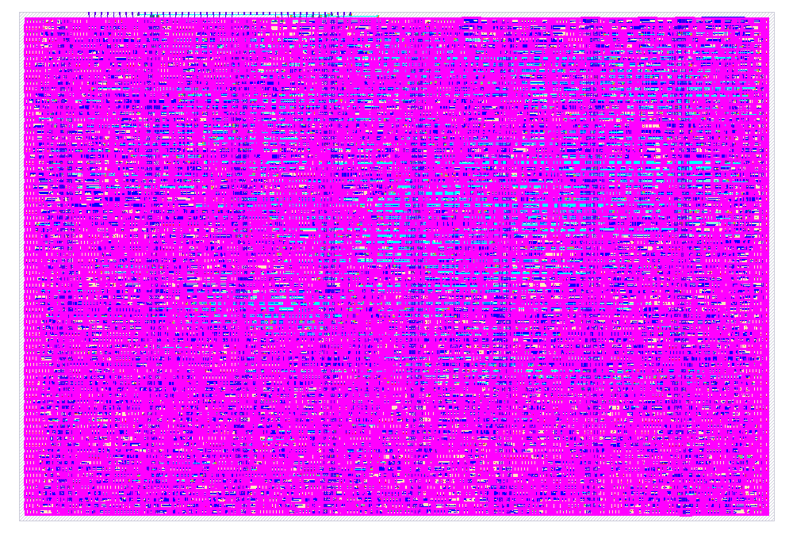

The Goal In One Pass
The host loads four tiny token vectors and three projection matrices. The chip computes Q, K, and V, builds one-head attention, and returns four output vectors. It is deliberately serialized: two small MAC lanes are reused over many clock cycles.
Watch One Attention Pass
This is a phase-level animation, not a clock trace. Follow the moving solid paths for data and the dashed blue paths for commands from the controller. The example follows token 0 in detail, then shows the same row loop being reused for tokens 1 through 3.
Current phase
Host loads operands
Commands identify a destination; the following packed bytes fill its register region.
- Controller does
- Decode LOAD_X/LOAD_WQ/LOAD_WK/LOAD_WV, select a register region, and count payload bytes.
- Data and arithmetic
- No arithmetic yet. X uses 4 bytes; Wq, Wk, and Wv use 2 bytes each.
- Example value
X = [[1,0],[0,1],[1,1],[-1,1]]- Verilog fit
toy_attention_core.vdecodes the command and writes the selected packed register array.
Pseudocode for selected phase
LOADfor command in [LOAD_X, LOAD_WQ, LOAD_WK, LOAD_WV]:
destination = decode(command)
for byte in command.payload:
registers[destination].write(byte) # keep packed
return_to(COMMAND)Data Flow Versus Control Flow
Data path
The machinery that holds and transforms numbers
Registers hold X, weights, Q/K/V, scores, and results. The MAC multiplies and adds. Comparators find a maximum. The reciprocal LUT approximates division. Muxes choose which value moves next.
Control path
The clock-by-clock conductor
The FSM remembers the current phase. Counters represent loop variables such as token, output dimension, key index, and byte index. Control signals tell the data path when to read, accumulate, clear, store, or emit a byte.
Implemented compute path
Implemented host-service path
Where The Verilog Fits
| File | Role In The Puzzle | Status | Next Use |
|---|---|---|---|
project.v |
Tiny Tapeout wrapper: maps byte data, handshakes, busy, and done to the fixed project pins. | Verified | Top module hardened into the 2x2 tile. |
toy_attention_core.v |
Command decoder, packed storage, operand muxes, full attention data path, debug mux, and 10-state FSM. | Verified | Computes and serves the complete transaction. |
dual_int4_mac.v |
Two parallel signed-int4 multiply-accumulate lanes with signed int16 sums. | Verified | Both lanes project and weight dimensions together; lane 0 computes serialized scores. |
toy_attention.py |
Exact integer golden model, packing rules, reciprocal LUT behavior, rounding, and reference traces. | 18 tests pass | Generates authoritative vectors for RTL comparison. |
tb_toy_attention.v |
Loads commands exactly like a host and compares results plus every debug class against Python. | Passes | Covers reference and signed/saturating stress transactions. |
test/test.py |
Wrapper-level cocotb test for transactions, prerequisites, backpressure, errors, and FLUSH. | RTL + gate pass | The same checks run on source RTL and the powered routed netlist. |
rtl/rtl/* |
Earlier exploratory controller, Q/K/V, matmul, and systolic-array modules. | Legacy, excluded | Not listed in info.yaml; the historical systolic array still does not elaborate. |
The tapeout source list contains only dual_int4_mac.v,
toy_attention_core.v, and project.v. This keeps exploratory RTL from
accidentally entering synthesis.
How It Runs End To End
The completed verification follows the same transaction a physical host will use: load bytes,
launch the chip, wait for done, read outputs, and compare them with the golden model.
-
1. Generate expected values
toy_attention.pycomputes exact int4 projections, B = 4 clipping, Q0.8 lookup values, signed rounding, packed bytes, and debug traces. -
2. Drive the byte protocol
The test sends 10 packed payload bytes using
rx_valid/rx_ready, including backpressure checks. -
3. Run the controller
RUN_ATTENTIONexecutes PROJECT, SCORE, MAX, CLIP, WEIGHT, and NORM until all four output tokens are stored. - 4. Read results and debug state The host receives four result bytes and reads Q/K/V plus the retained final score, weight, denominator, numerator, and reciprocal values.
- 5. Compare at two simulation levels The same wrapper transaction passes against source RTL and the powered post-layout gate netlist.
- 6. Prove physical fit LibreLane hardening produces a routed 2x2 macro that meets 10 MHz, passes signoff checks, and passes Tiny Tapeout precheck.
-
7. Preserve the exact contract
toy_attention_spec.md,info.yaml, andconfig.jsonkeep arithmetic, pins, sources, tile count, and clock explicit.
Model + RTL
Run the complete local regression
cd TPU
make verifyRuns 18 Python tests, the historical PE check, and two full attention transactions.
Tiny Tapeout wrapper
Run cocotb at the chip pins
cd test
make
make GATES=yesThe gate-level command uses the generated powered netlist and Sky130 models.
What Remains Before Submission
| Priority | Remaining item | Meaning |
|---|---|---|
| 1 | Run the official cloud workflow on the exact submitted revision. | Local hardening and precheck pass, but the shuttle's CI result is the authoritative submission gate. |
| 2 | Review maximum-slew warnings. | Timing, capacitance, DRC, LVS, antenna, and precheck pass; slow and typical corners still report non-fatal slew warnings. |
| 3 | Freeze a release commit and submit it to a shuttle. | The current worktree has a working generated bundle, but fabrication requires a pushed, immutable Git revision and a selected public Tiny Tapeout run. |
Verified End-to-End Result
The reference transaction now completes at RTL and powered gate level:
- The host loads 10 packed payload bytes for X, Wq, Wk, and Wv.
- The controller runs Q/K/V, all four attention rows, normalization, and result drain.
- The host receives four packed result bytes representing the 4 x 2 int4 output.
READ_DEBUGreturns Q/K/V, scores, clipped weights, denominators, and numerators that match Python.- The complete top-level transaction reaches
donewithout protocol violations. - The routed 2x2 macro uses 65.043% of its placement area and has 70.189609 ns worst setup slack at 10 MHz.
- Tiny Tapeout precheck passes all 15 applicable checks.
